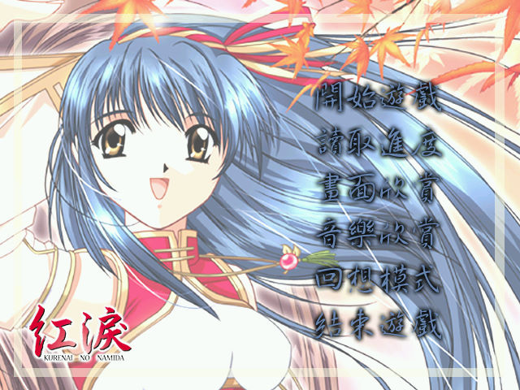
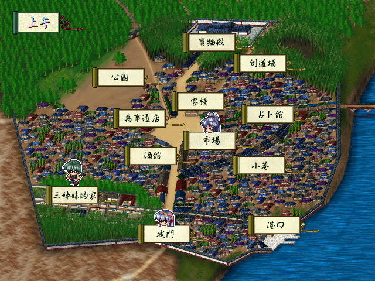
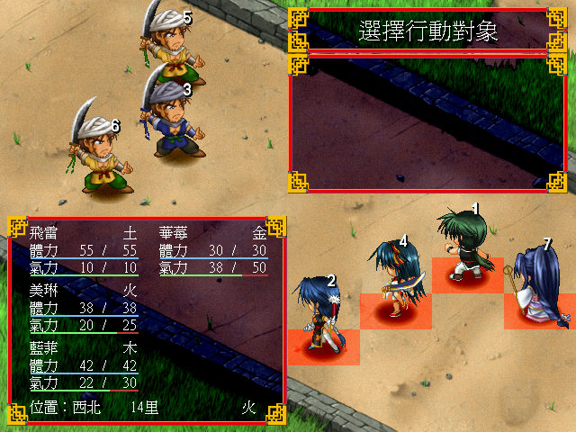

名稱：紅淚 (Kurenai no Namida／Crimson Tears，繁中／簡中／日文版)
簡介：Studio e.go 1999年出品的戀愛劇情養成遊戲，兼具回合制角色扮演元素，2000年由
信必優中文化並代理發行 [待補]。



保護：繁中版為光碟，破解碼（需將光碟的Movie和Music目錄拷貝到安裝目錄裡）：
ct.exe
E8 25 37 01 00 83 C4 08 85 C0 75 08
90 90 90 90 90 -- -- -- -- -- EB --
E8 9F CC 00 00 83 C4 08 85 C0 75 13
90 90 90 90 90 -- -- -- -- -- EB --
備註：日文版必須在日文語系下才能安裝，執行則沒有限制。
備註：信必優在中文化的同時，已將所有H事件、相關CG圖全部去除，被玩家戲稱為閹割版，
若想玩原汁原味的遊戲，只能玩日文版或漢化版。
檔案：ctupdate.rar = 繁中更新檔
ct104.rar = 日文1.04更新檔
ct-chs.rar = 簡中漢化版（18禁）
Save00.rar = 全CG存檔